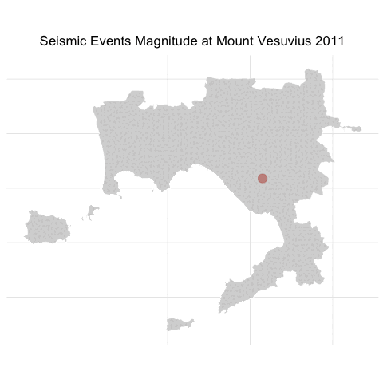

TyT2025W19: Seismic Events at Mount Vesuvius
By Johanie Fournier, agr., M.Sc. in rstats tidymodels tidytuesday eda viz
May 11, 2025

Subscribe button
The data of this week Tidytuesday challenge inspire me to make an aminated map of the seismic events at Mount Vesuvius. The dataset contains information about seismic events detected at the famous Mount Vesuvius in Italy. It comes from the Italian Istituto Nazionale di Geofisica e Vulcanologia (INGV)’s Data Portal and can be explored along with other seismic areas on the GOSSIP website. The raw data was saved as individual CSV files from the GOSSIP website and some values were translated from Italian to English.
Get the data
tuesdata <- tidytuesdayR::tt_load(2025, week = 19)
vesuvius <- tuesdata$vesuvius
Explore the data
skimr::skim(tuesdata$vesuvius)
| Name | tuesdata$vesuvius |
| Number of rows | 12027 |
| Number of columns | 11 |
| _______________________ | |
| Column type frequency: | |
| character | 3 |
| numeric | 7 |
| POSIXct | 1 |
| ________________________ | |
| Group variables | None |
Data summary
Variable type: character
| skim_variable | n_missing | complete_rate | min | max | empty | n_unique | whitespace |
|---|---|---|---|---|---|---|---|
| area | 0 | 1 | 14 | 14 | 0 | 1 | 0 |
| type | 0 | 1 | 10 | 10 | 0 | 1 | 0 |
| review_level | 0 | 1 | 7 | 11 | 0 | 2 | 0 |
Variable type: numeric
| skim_variable | n_missing | complete_rate | mean | sd | p0 | p25 | p50 | p75 | p100 | hist |
|---|---|---|---|---|---|---|---|---|---|---|
| event_id | 0 | 1.00 | 15494.12 | 11014.20 | 102.00 | 5965.50 | 14981.00 | 21387.50 | 40802.00 | ▇▅▇▂▂ |
| latitude | 3433 | 0.71 | 40.82 | 0.00 | 40.80 | 40.82 | 40.82 | 40.82 | 40.86 | ▁▇▂▁▁ |
| longitude | 3433 | 0.71 | 14.43 | 0.00 | 14.35 | 14.42 | 14.43 | 14.43 | 14.48 | ▁▁▃▇▁ |
| depth_km | 3433 | 0.71 | 0.41 | 0.50 | 0.01 | 0.14 | 0.24 | 0.43 | 9.35 | ▇▁▁▁▁ |
| duration_magnitude_md | 399 | 0.97 | 0.18 | 0.56 | -2.00 | -0.20 | 0.10 | 0.50 | 3.10 | ▁▇▇▁▁ |
| md_error | 399 | 0.97 | 0.30 | 0.00 | 0.30 | 0.30 | 0.30 | 0.30 | 0.30 | ▁▁▇▁▁ |
| year | 0 | 1.00 | 2018.88 | 3.28 | 2011.00 | 2016.00 | 2019.00 | 2022.00 | 2024.00 | ▂▆▅▇▇ |
Variable type: POSIXct
| skim_variable | n_missing | complete_rate | min | max | median | n_unique |
|---|---|---|---|---|---|---|
| time | 0 | 1 | 2011-04-20 00:27:24 | 2024-12-31 17:02:32 | 2019-05-11 22:23:43 | 11953 |
We have a date variable and an indication og the magnitude of the seismic event.
Animated Visualization
library(gganimate)
library(rgeoboundaries)
# Gulf of Naples in Campania, Italy
naples <- gb_adm3("Italy") |>
filter(shapeName == "Napoli")
#Create the base map
base_map <- ggplot() +
geom_sf(data=naples, fill="lightgrey", color="white") +
geom_point(data=vesuvius,
aes(x=longitude,
y=latitude,
group=year,
color=duration_magnitude_md,
size=duration_magnitude_md*1000,
alpha = 50)) +
transition_time(year) +
ggtitle('Seismic Events Magnitude at Mount Vesuvius {frame_time}') +
shadow_mark() +
scale_color_gradient(low = "pink", high = "darkred")+
theme(legend.position = "none",
axis.title.x = element_blank(),
axis.title.y = element_blank(),
axis.text.x=element_blank(),
axis.text.y=element_blank(),
axis.ticks.x=element_blank(),
axis.ticks.y=element_blank(),
axis.line.x=element_blank(),
axis.line.y=element_blank(),
plot.title=element_text(hjust=0.5))
num_years <- max(vesuvius$year) - min(vesuvius$year) + 1
# Save the animation as a GIF
anim <- gganimate::animate(base_map, nframes = num_years, duration=20)
anim_save("ggmap_animation.gif", animation = anim)
# Read and display the saved GIF animation
animation <- magick::image_read("ggmap_animation.gif")
print(animation, info = FALSE)

Sign up for the newsletter

Sign up
Session Info
sessionInfo()
R version 4.4.2 (2024-10-31)
Platform: aarch64-apple-darwin20
Running under: macOS Sequoia 15.5
Matrix products: default
BLAS: /Library/Frameworks/R.framework/Versions/4.4-arm64/Resources/lib/libRblas.0.dylib
LAPACK: /Library/Frameworks/R.framework/Versions/4.4-arm64/Resources/lib/libRlapack.dylib; LAPACK version 3.12.0
locale:
[1] en_US.UTF-8/en_US.UTF-8/en_US.UTF-8/C/en_US.UTF-8/en_US.UTF-8
time zone: America/Toronto
tzcode source: internal
attached base packages:
[1] stats graphics grDevices datasets utils methods base
other attached packages:
[1] reticulate_1.40.0 jofou.lib_0.0.0.9000 tidytuesdayR_1.1.2
[4] tictoc_1.2.1 KrigR_0.9.4 ncdf4_1.23
[7] ecmwfr_2.0.2 rgeoboundaries_1.3.1 terra_1.8-10
[10] sf_1.0-19 pins_1.4.0 fs_1.6.5
[13] timetk_2.9.0 yardstick_1.3.2 workflowsets_1.1.0
[16] workflows_1.1.4 tune_1.2.1 rsample_1.2.1
[19] parsnip_1.2.1 modeldata_1.4.0 infer_1.0.7
[22] dials_1.3.0 scales_1.3.0 broom_1.0.7
[25] tidymodels_1.2.0 recipes_1.1.0 doFuture_1.0.1
[28] future_1.34.0 foreach_1.5.2 skimr_2.1.5
[31] gganimate_1.0.9 forcats_1.0.0 stringr_1.5.1
[34] dplyr_1.1.4 purrr_1.0.2 readr_2.1.5
[37] tidyr_1.3.1 tibble_3.2.1 ggplot2_3.5.1
[40] tidyverse_2.0.0 lubridate_1.9.4 kableExtra_1.4.0
[43] inspectdf_0.0.12.1 openxlsx_4.2.7.1 knitr_1.49
loaded via a namespace (and not attached):
[1] rstudioapi_0.17.1 jsonlite_1.8.9 magrittr_2.0.3
[4] magick_2.8.5 farver_2.1.2 rmarkdown_2.29
[7] vctrs_0.6.5 memoise_2.0.1 hoardr_0.5.5
[10] base64enc_0.1-3 gh_1.4.1 htmltools_0.5.8.1
[13] progress_1.2.3 curl_6.1.0 parallelly_1.41.0
[16] KernSmooth_2.23-26 httr2_1.1.0 plyr_1.8.9
[19] zoo_1.8-12 stars_0.6-7 cachem_1.1.0
[22] ggfittext_0.10.2 lifecycle_1.0.4 iterators_1.0.14
[25] pkgconfig_2.0.3 Matrix_1.7-2 R6_2.5.1
[28] fastmap_1.2.0 digest_0.6.37 reshape_0.8.9
[31] colorspace_2.1-1 furrr_0.3.1 timechange_0.3.0
[34] httr_1.4.7 abind_1.4-8 compiler_4.4.2
[37] intervals_0.15.5 proxy_0.4-27 bit64_4.6.0-1
[40] withr_3.0.2 backports_1.5.0 viridis_0.6.5
[43] DBI_1.2.3 MASS_7.3-64 lava_1.8.1
[46] rappdirs_0.3.3 classInt_0.4-11 tools_4.4.2
[49] units_0.8-5 zip_2.3.1 future.apply_1.11.3
[52] nnet_7.3-20 glue_1.8.0 grid_4.4.2
[55] snow_0.4-4 generics_0.1.3 gtable_0.3.6
[58] countrycode_1.6.0 tzdb_0.4.0 class_7.3-23
[61] data.table_1.16.4 hms_1.1.3 sp_2.1-4
[64] xml2_1.3.6 pillar_1.10.1 vroom_1.6.5
[67] splines_4.4.2 lhs_1.2.0 tweenr_2.0.3
[70] lattice_0.22-6 bit_4.5.0.1 FNN_1.1.4.1
[73] renv_1.0.7 survival_3.8-3 tidyselect_1.2.1
[76] pbapply_1.7-2 gitcreds_0.1.2 gridExtra_2.3
[79] svglite_2.1.3 crul_1.5.0 xfun_0.50
[82] hardhat_1.4.0 timeDate_4041.110 stringi_1.8.4
[85] DiceDesign_1.10 yaml_2.3.10 evaluate_1.0.3
[88] codetools_0.2-20 httpcode_0.3.0 automap_1.1-12
[91] cli_3.6.3 rpart_4.1.24 systemfonts_1.2.1
[94] repr_1.1.7 munsell_0.5.1 spacetime_1.3-2
[97] Rcpp_1.0.14 doSNOW_1.0.20 globals_0.16.3
[100] png_0.1-8 parallel_4.4.2 gower_1.0.2
[103] prettyunits_1.2.0 GPfit_1.0-8 listenv_0.9.1
[106] viridisLite_0.4.2 ipred_0.9-15 xts_0.14.1
[109] prodlim_2024.06.25 e1071_1.7-16 gstat_2.1-2
[112] crayon_1.5.3 rlang_1.1.5 cowplot_1.1.3
- Posted on:
- May 11, 2025
- Length:
- 4 minute read, 677 words
- Categories:
- rstats tidymodels tidytuesday eda viz
- Tags:
- eda rstats tidymodels tidytuesday viz